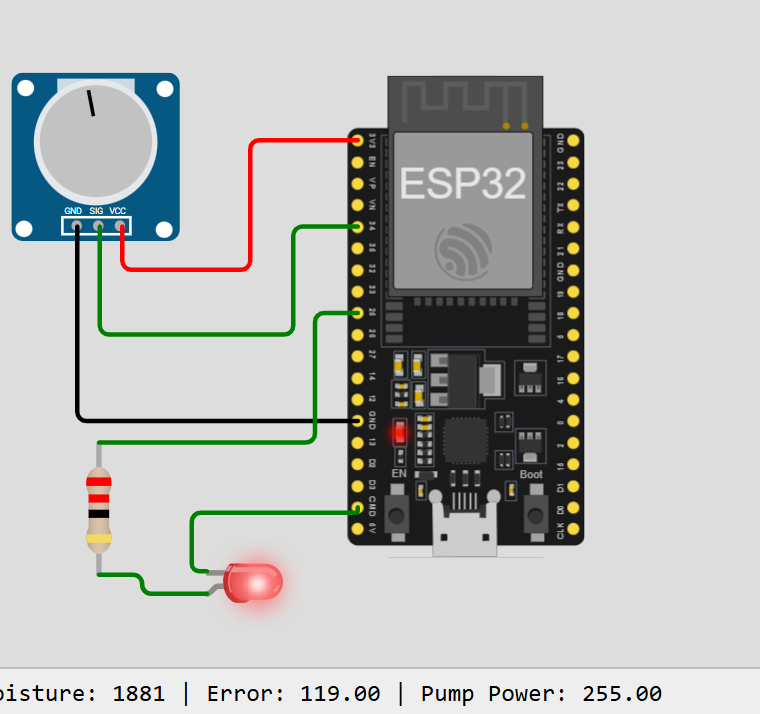

Smart PID Irrigation System
An IoT-based smart irrigation project designed to monitor environmental conditions and control irrigation automatically.
Project Overview
This project combines sensors, an ESP32 microcontroller, IoT connectivity and PID control to create a smarter irrigation system.
Technologies Used
ESP32 • Sensors • IoT • Arduino • PID Control • Arduino IDE
What the System Does
- Monitors soil moisture conditions.
- Monitors environmental light conditions.
- Processes sensor information using an ESP32.
- Uses PID control to manage irrigation.
- Controls a water pump based on system conditions.
- Provides information that can be monitored digitally.


System Architecture
Sensors collect information from the environment. The ESP32 processes the sensor readings and applies the control algorithm. The irrigation system then responds according to the required conditions.
Project Goal
The goal is to reduce unnecessary water usage while helping maintain suitable soil conditions for plants through automated monitoring and control.
Future Improvements
- Add a mobile monitoring interface.
- Store sensor data for analysis.
- Add machine learning for smarter irrigation decisions.
- Improve remote monitoring through Wi-Fi.